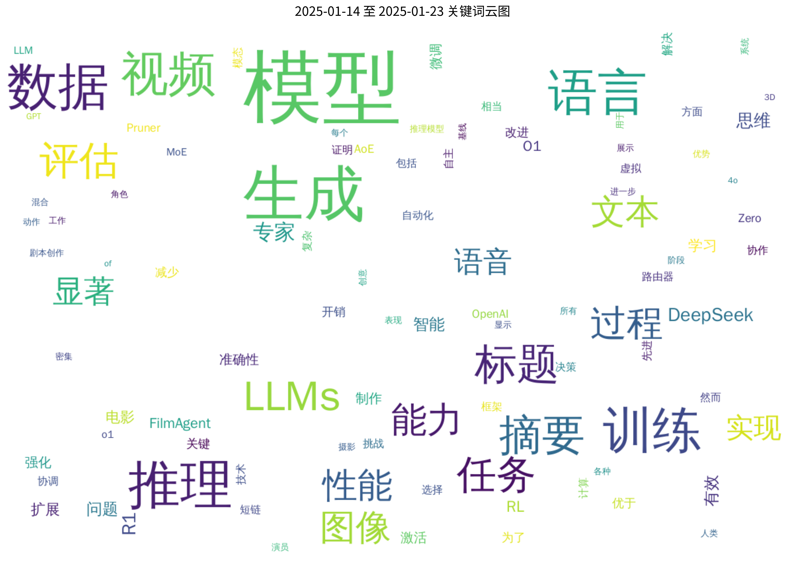

原文标题： Evolving Deeper LLM Thinking
摘要： 我们探索了一种用于扩展大型语言模型推理时间计算的进化搜索策略。所提出的方法，即思维进化（Mind Evolution），利用语言模型生成、重组和优化候选响应。该方法在存在解决方案评估器的情况下，避免了形式化底层推理问题的需求。在控制推理成本的情况下，我们发现思维进化在自然语言规划任务中显著优于其他推理策略，如最佳N选一（Best-of-N）和顺序修订（Sequential Revision）。在TravelPlanner和Natural Plan基准测试中，思维进化在不使用正式求解器的情况下，使用Gemini 1.5 Pro解决了超过98%的问题实例。
论文链接： HuggingFace | arXiv
原文标题： PaSa: An LLM Agent for Comprehensive Academic Paper Search
摘要： 我们介绍了PaSa，一种由大语言模型驱动的高级论文搜索代理。PaSa能够自主做出包括调用搜索工具、阅读论文和选择相关参考文献在内的一系列决策，最终为复杂的学术查询提供全面而准确的结果。我们使用强化学习对PaSa进行了优化，并采用了一个合成数据集AutoScholarQuery，该数据集包含35,000个细粒度的学术查询以及从顶级AI会议出版物中获取的相应论文。此外，我们还开发了RealScholarQuery基准，收集了现实世界中的学术查询，以评估PaSa在更真实场景中的表现。尽管PaSa是在合成数据上训练的，但它在RealScholarQuery上的表现显著优于现有的基线模型，包括Google、Google Scholar、使用GPT-4进行查询改写的Google、chatGPT（支持搜索的GPT-4o）、GPT-o1以及PaSa-GPT-4o（通过提示GPT-4o实现的PaSa）。值得注意的是，PaSa-7B在recall@20和recall@50上分别比基于Google的最佳基线模型（使用GPT-4o的Google）高出37.78%和39.90%。同时，PaSa-7B在召回率和精确度上分别比PaSa-GPT-4o高出30.36%和4.25%。模型、数据集和代码可在https://github.com/bytedance/pasa获取。
论文链接： HuggingFace | arXiv
原文标题： Multiple Choice Questions: Reasoning Makes Large Language Models (LLMs) More Self-Confident Even When They Are Wrong
摘要： 评估大型语言模型（LLMs）最广泛使用的方法之一是多项选择题（MCQ）测试。MCQ基准测试能够大规模测试LLM在几乎所有主题上的知识，因为结果可以自动处理。为了帮助LLM回答问题，可以在提示中包含一些示例，称为少样本。此外，可以要求LLM直接选择答案选项，或者先提供推理再选择答案，这被称为思维链。除了检查所选答案是否正确外，评估还可以查看LLM对其响应的估计概率，作为LLM对响应的信心的指示。在本文中，我们研究了LLM对其答案的信心如何取决于模型是否被要求直接回答或在回答前提供推理。对七个不同模型在广泛主题上的问题评估结果显示，当LLM在回答前提供推理时，它们对其答案更有信心。无论所选答案是否正确，这种情况都会发生。我们的假设是，这种行为是由于推理修改了所选答案的概率，因为LLM基于输入问题和支持所选答案的推理来预测答案。因此，LLM的估计概率似乎具有内在的局限性，应在评估程序中加以理解。有趣的是，在人类中也观察到了相同的行为，解释答案会增加对其正确性的信心。
论文链接： HuggingFace | arXiv
原文标题： Textoon: Generating Vivid 2D Cartoon Characters from Text Descriptions
摘要： 二维卡通风格是数字角色创作中的一种重要艺术形式，尤其在年轻观众中广受欢迎。尽管数字人技术的进步推动了关于逼真数字人和三维角色的广泛研究，但交互式二维卡通角色却相对较少受到关注。与需要复杂构建和资源密集型渲染的三维角色不同，Live2D作为一种广泛使用的二维卡通角色格式，提供了一种更高效的替代方案，它允许以模拟三维运动的方式为二维角色制作动画，而无需构建完整的三维模型。此外，Live2D采用轻量级的HTML5（H5）渲染，提高了可访问性和效率。在本技术报告中，我们介绍了Textoon，这是一种基于文本描述生成多样二维卡通角色的创新方法，采用Live2D格式。Textoon利用前沿的语言和视觉模型来理解文本意图并生成二维外观，能够在一分钟内创建出各种令人惊叹且具有交互性的二维角色。项目主页为https://human3daigc.github.io/Textoon_webpage/。
论文链接： HuggingFace | arXiv
原文标题： Bridging Language Barriers in Healthcare: A Study on Arabic LLMs
摘要： 本文探讨了开发既精通多语言理解又具备医学知识的大型语言模型（LLMs）所面临的挑战。我们证明，仅仅翻译医学数据并不能保证在目标语言的临床任务中表现出色。我们的实验表明，不同医疗任务中训练数据的最佳语言组合差异显著。我们发现，经过精心校准语言比例的大型模型在母语临床任务中表现更优。此外，我们的结果表明，仅依赖微调可能不是将新语言知识融入LLMs的最有效方法。相反，数据和计算密集型的预训练方法可能仍然是实现多语言医疗环境中最佳性能的必要条件。这些发现为构建有效且包容的医疗AI系统，服务于不同语言社区提供了宝贵的指导。
论文链接： HuggingFace | arXiv
原文标题： X-Dyna: Expressive Dynamic Human Image Animation
摘要： 我们介绍了X-Dyna，这是一种新颖的零样本、基于扩散的管道，用于使用从驱动视频中提取的面部表情和身体动作对单个人体图像进行动画处理，从而为主题和周围环境生成逼真、上下文感知的动态效果。基于先前以人体姿势控制为中心的方法，X-Dyna解决了导致动态细节丢失的关键缺陷，增强了人体视频动画的逼真度。我们方法的核心是Dynamics-Adapter，这是一个轻量级模块，有效地将参考外观上下文集成到扩散主干的空间注意力中，同时保留了运动模块在合成流畅和复杂动态细节方面的能力。除了身体姿势控制外，我们还将一个局部控制模块与我们的模型连接起来，以捕捉身份分离的面部表情，促进准确的表情传递，从而增强动画场景的真实感。这些组件共同构成了一个统一的框架，能够从人类和场景视频的多样化混合中学习物理人体运动和自然场景动态。全面的定性和定量评估表明，X-Dyna优于最先进的方法，创造出高度逼真且富有表现力的动画。代码可在https://github.com/bytedance/X-Dyna获取。
论文链接： HuggingFace | arXiv
原文标题： HiFi-SR: A Unified Generative Transformer-Convolutional Adversarial Network for High-Fidelity Speech Super-Resolution
摘要： 生成对抗网络（GANs）的应用最近推动了基于中间表示（如梅尔频谱图）的语音超分辨率（SR）技术的发展。然而，现有的SR方法通常依赖于独立训练和串联的网络，可能导致表示不一致和语音质量差，尤其是在域外场景中。在本研究中，我们提出了HiFi-SR，一种统一的网络，利用端到端的对抗训练来实现高保真语音超分辨率。我们的模型具有一个统一的Transformer-卷积生成器，旨在无缝处理潜在表示的预测及其到时域波形的转换。Transformer网络作为一个强大的编码器，将低分辨率的梅尔频谱图转换为潜在空间表示，而卷积网络则将这些表示上采样为高分辨率波形。为了增强高频保真度，我们在对抗训练过程中引入了一个多频带、多尺度的时频判别器，以及一个多尺度的梅尔重建损失。HiFi-SR具有多功能性，能够将任何输入语音信号从4 kHz到32 kHz上采样到48 kHz的采样率。实验结果表明，无论是在域内还是域外场景中，HiFi-SR在客观指标和ABX偏好测试中均显著优于现有的语音SR方法（https://github.com/modelscope/ClearerVoice-Studio）。
论文链接： HuggingFace | arXiv
原文标题： ComplexFuncBench: Exploring Multi-Step and Constrained Function Calling under Long-Context Scenario
摘要： 通过实时API增强大型语言模型（LLMs）可以帮助生成更准确和最新的响应。然而，由于数据收集和评估的复杂性，在现实场景中评估LLMs的函数调用能力仍然未被充分探索。在本研究中，我们引入了ComplexFuncBench，这是一个跨五个现实场景的复杂函数调用基准。与现有基准相比，ComplexFuncBench涵盖了多步和约束函数调用，这需要长参数填写、参数值推理和128k长上下文。此外，我们提出了一个自动框架ComplexEval，用于定量评估复杂函数调用任务。通过全面的实验，我们展示了最先进的LLMs在函数调用方面的不足，并提出了优化这些能力的未来方向。数据和代码可在https://github.com/THUDM/ComplexFuncBench获取。
论文链接： HuggingFace | arXiv
原文标题： GaussianAvatar-Editor: Photorealistic Animatable Gaussian Head Avatar Editor
摘要： 我们介绍了GaussianAvatar-Editor，这是一个创新的框架，用于文本驱动的可动画化高斯头部头像编辑，这些头像可以在表情、姿态和视角上完全控制。与静态的3D高斯编辑不同，编辑可动画化的4D高斯头像面临着运动遮挡和时空不一致性的挑战。为了解决这些问题，我们提出了加权Alpha混合方程（WABE）。该函数增强了可见高斯的混合权重，同时抑制了对非可见高斯的影响，有效处理了编辑过程中的运动遮挡。此外，为了提高编辑质量并确保4D一致性，我们将条件对抗学习引入到编辑过程中。这一策略有助于优化编辑结果并保持整个动画的一致性。通过整合这些方法，我们的GaussianAvatar-Editor在可动画化的4D高斯编辑中实现了逼真且一致的结果。我们在多个主题上进行了全面的实验，以验证我们提出的技术的有效性，这些实验证明了我们的方法相对于现有方法的优越性。更多结果和代码可在项目链接获取。
论文链接： HuggingFace | arXiv
